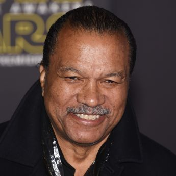
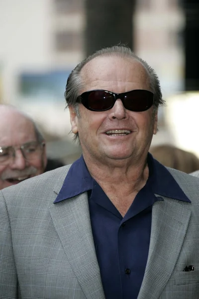
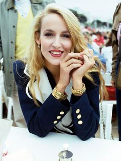
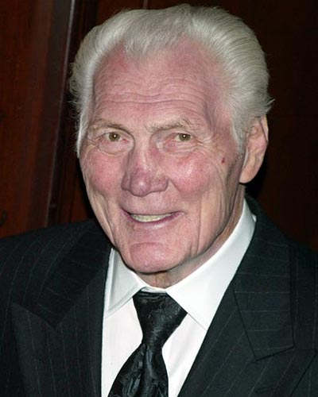
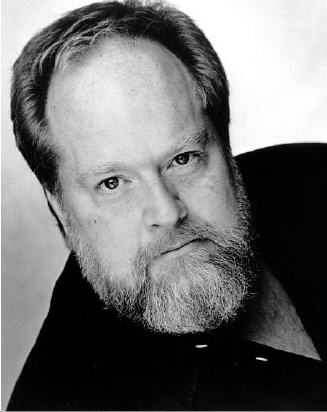

Олдскульна, але разом з тим чудова та атмосферна екранізація історії одного з головних супергероїв всесвіту DC-comics,
темного лицаря Готема, Людини-Кажана.
Історія добре відома усім шанувальникам коміксів. Головний герой – мільярдер Брюс Вейн, який в ранньому дитинстві
став свідком вбивства власних батьків і з того часу одержимий ненавистю до злочинців.
Використовуючий власний інтелект, фізичну підготовленість та шалені статки, Брюс стає Бетменом – таємничим месником в масці,
який наводить жах на злочинців Готему…
Фільм «Бетмен» (1989) був знятий режисером Тімом Бертоном у притаманному йому готичному стилі.
Його точно будуть із задоволенням дивитись наживо усі шанувальники класики жанру екшн.
Майкл Кітон
Бетмен
Біллі Ді Вільямс
Гарві Дент
Джек Ніколсон
Джокер
Джеррі Голл
Алісія Гант

Кім Бейсінгер
Вікі Вейл
Джек Паланс
Карл Ґріссом

Пет Гінгл
комісар Джеймс Ґордон

Роберт Вул
Александер Нокс

Трейсі Волтер
Боб
Вільям Гуткінс
лейтенант Екхард